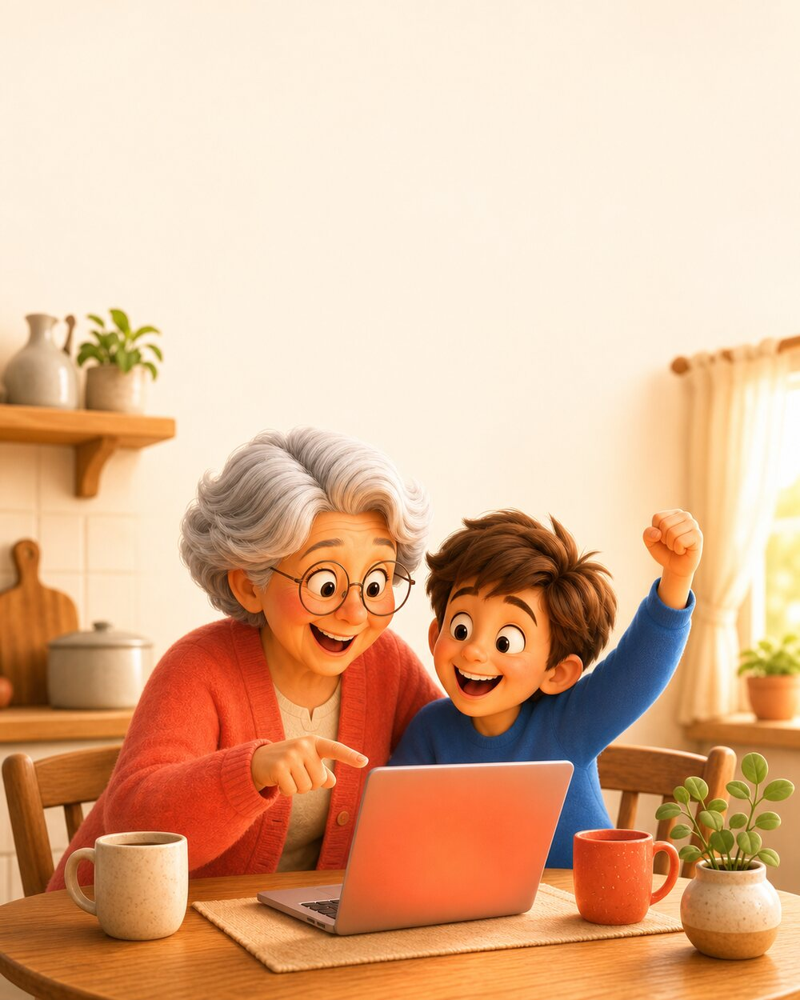

All this AI talk can feel like it left you behind. It didn't. This is a gentle place to start, at your own pace, with a patient helper that never sighs at a question.
Free. No catch. Go as slow as you like.

Never opened one before? Start right here.
If you can get to Facebook, you can do this. Pick one below. They are free to try, right in the same browser you already use, or as an app on your phone. Honestly, you cannot break anything.
Open the App Store (on an iPhone or iPad) or the Play Store (on an Android), type a name into the search box (Claude, ChatGPT, or Gemini), and tap Get or Install. It is free to start. Then open it, and you will see a box that says something like "Ask anything." Type a question and press send. That is the whole trick, and there is no wrong move.
Then, a few easy things to try.
Think of AI as a patient helper who is happy to explain anything, as many times as you want. There is no wrong way to do it.
Try it
Ask it anything
Type a question the way you would ask a smart friend. "Explain this letter from the bank." "What is a good gift for an eight year old?" It answers in plain words, and you can always say "simpler, please."
Try it
Let it write the first draft
A birthday message, an email to the doctor, a note to the neighbors. Tell it what you want to say and it writes a draft. Then you make it sound like you.
Try it
Settle the friendly debate
Recipes, history, how a thing works, what that word means. Ask away. No question is too small, and it never gets tired of you.
The one rule
Catch it being wrong
Here is the fun part: it can sound sure and still be wrong. Double-check anything that matters, the way you would with anyone. Catching it is half the skill, and you are good at that already.
Your first project: turn a memory into a keepsake
Ready for a real one? Here is a little project to do just for yourself, start to finish, in about twenty minutes. You will take one memory from your life and turn it into a beautiful written keepsake to keep, print, or email to the family. This is the whole thing, and it is lovely.
You will need one thing: a story worth keeping. How you met your spouse. A summer from your childhood. The day a child was born. Your first job, your old neighborhood, a recipe and the person it came from. Pick one, and open your helper from the section above.
1
Tell it your story, messy is fine
Do not worry about writing it well. Just talk. Type it the way you would tell it out loud, jumping around and all. Paste this in first, then tell your story underneath it.
Copy this to start
I want to turn a memory from my life into a short, warm keepsake to share with my family. I will tell you the story in my own words, a little messy. Please listen first, then ask me two or three gentle questions to fill in the parts that would make it richer. Here is my story:
2
Answer its questions
It will ask you a few things, what year it was, what the room smelled like, who else was there. Answer however you like. This is the part that turns a fact into a memory. Take your time. There are no wrong answers.
3
Ask it to write the keepsake
Now let it do the heavy lifting. Then shape it until it feels like you. Say "make it warmer," or "shorter," or "that is not quite how I would say it, try again." You are the boss, and it never gets tired of trying.
Copy this next
Now please write this as a short, warm keepsake I could read aloud to my family, in a natural voice that sounds like me, not fancy. Keep it under one page. When you are done, I may ask you to adjust the tone.
4
Keep it, and share it
When it feels right, ask it to give the piece a title. Then it is yours. Copy the words into an email to your kids or grandkids, or print it and tuck it somewhere they will find it one day. You just made something that will outlast you, in twenty minutes, on your first try.
A nice finishing touch
This is wonderful, thank you. Please give it a short, heartfelt title, and then write one gentle sentence I could put at the top when I send it to my grandchildren.
Look what you just did
You asked it something real. You shaped its answer until it sounded like you. And you knew the story better than it did, so you kept it honest. That is the whole skill, and you already have it. It is the exact same thing you will do next, with the grandkids, to build something real together.
Bonus, if you are having fun
Give your story a picture
Here is a delightful trick: the AI can also paint your memory. Ask it for a warm, Pixar-style picture to go with your keepsake, and it makes one in a few seconds. Here is the kind of thing it gives back.
An example, made in seconds from a story like yours.
Which one did you use for your story? Follow that path.
If you used Claude
One quick hop Best practice
Claude writes beautiful stories, but it does not make pictures. No problem. It will happily write the picture instructions for you, and you hand them to a friend that does. This is the good stuff, because you get to see how alike these tools really are.
In the same chat where you made your story, paste the box below. Claude will write you a picture prompt.
Get ChatGPT or Gemini (free). On a phone or tablet, open the App Store or Play Store, search the name, and tap Get. On a computer, go to chatgpt.com or gemini.google.com.
Paste what Claude gave you into that app, and press send. Your picture appears.
Paste this to Claude
This story is lovely. Please write me a short image prompt I can copy into ChatGPT or Gemini to create a warm, Pixar-style picture that captures this memory. Just give me the prompt to copy.
If you used ChatGPT or Gemini
You are already set
These two make pictures themselves. Just ask, right in the same chat where your story is. Paste the box below and watch.
Paste this in the same chat
This is wonderful. Please make a warm, Pixar-style picture that captures this memory, to go along with the story.
Want the extra practice? Try the other one too. If you used ChatGPT, give Gemini a go, or the other way around. Getting comfy hopping between them is a real skill, and it is easier than it looks.
Stuck? You are not alone.
Here is the nice part. We are right there on Facebook, the same place you already are. If something does not make sense, just ask. No question is too small, and a real person, with a friendly AI helping, will answer.
Or just follow along: give our Facebook page a like for gentle, bite-size tips right in your feed.
Then build something real, with the grandkids
The best way to learn this is together.
Our free Founder Kit walks you and a grandchild from a simple idea all the way to a real little business, one small step at a time, with the AI doing the heavy lifting.
You bring the wisdom. They bring the curiosity. The AI handles the parts neither of you wants to wrestle with. It is the kind of afternoon they remember, and you both come away knowing how to use the tools that are quietly running the world now.
Claude, Actually is a program of the AI Actually Foundation, a California nonprofit. There is nothing to buy here and no sales call coming. We just think everyone, at every age, should get to use this. Take it, share it, and come say hi.
The newsletter
Get a friendly note by email
Every now and then we send a simple, friendly note: new free guides and gentle tips for using AI. No spam, and you can leave any time.